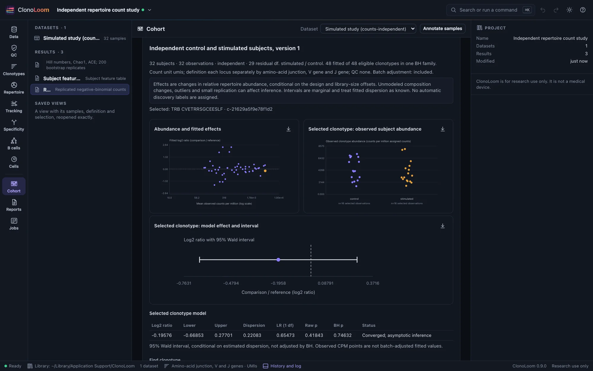
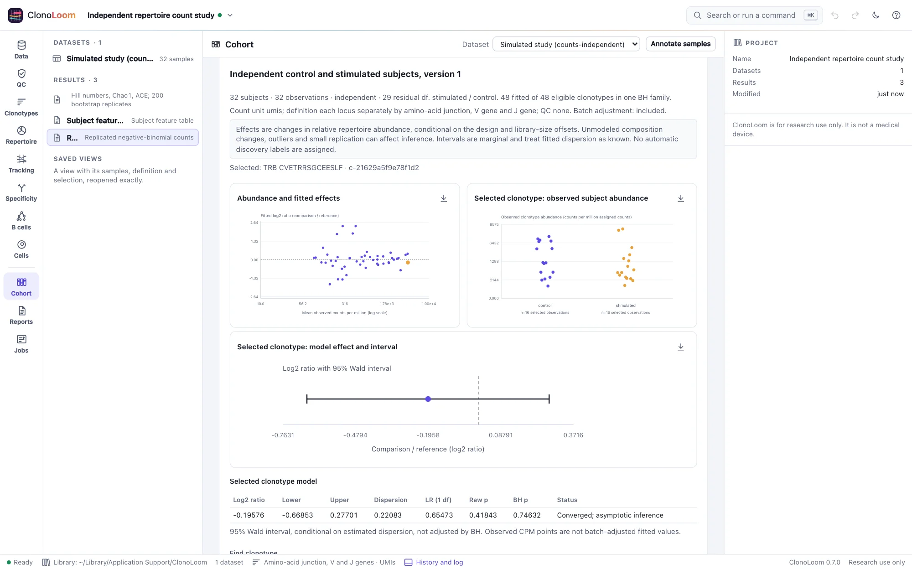
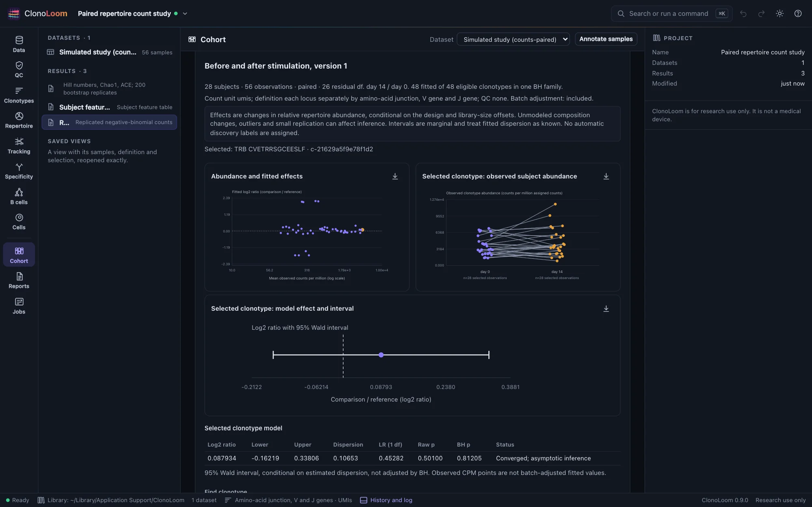
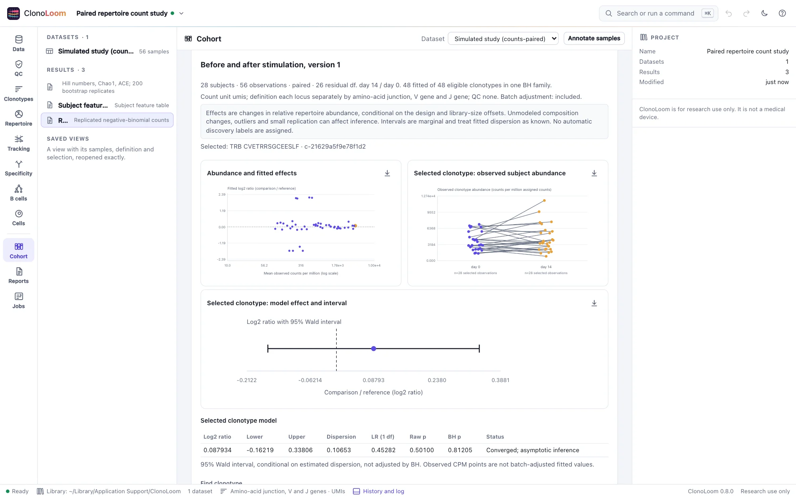

Replicated clonotype counts
A replicated count model estimates a group contrast while accounting for between-observation variability. Its units are biological subjects, and its effects describe relative repertoire abundance.
Fit a saved study design
- Open receptor data with a declared count unit. Check and save a two-group study design, measure diversity under the intended definition and QC, and build its subject features.
- In Cohort → Replicated clonotype counts, choose the saved feature parent. The original receptor dataset must be open for initial count capture; its counts are taken under the parent's definition and QC.
- Declare the count/prevalence filter before inspecting results: default count ≥10 in ≥12 selected samples. Choose confidence and whether to adjust for recorded batch, then select Fit replicated counts.
The model requires at least 12 subjects per group and 24 residual degrees of freedom. Paired designs include one fixed-effect block per subject, so at least 25 complete pairs are needed without extra batch columns. This conservative scope supports an unmoderated first implementation; it is not a universal sample-size or power recommendation. Cells and sequencing reads never increase biological replication.
The saved matrix includes an intercept, comparison indicator, paired subject blocks where applicable, and optional batch indicators. Every selected batch must be known when adjustment is requested. A batch constant within each paired subject is aliased with subject blocks and cannot be separately fitted. Rank-deficient designs fail explicitly; no column, sample or pair is silently dropped.
Examples with recorded generating truth
Open Replicated independent clonotype counts from Example data for 32 subjects (16 control and 16 stimulated), or Replicated paired clonotype counts for 28 subjects at day 0/day 14. The null example has no generating group effect. These controlled artificial studies have uneven sampling depths, heterogeneous negative-binomial variation, subject effects, two batches, a shared receptor panel and a private long tail. They do not estimate human receptor-sharing frequencies or antigen specificity.
Annotate batches from truth/observations.tsv: B1/B2 alternate by zero-based subject plus visit. For independent samples, S01-1 is B1, S02-1 B2, continuing in order. For pairs, S01-1 is B1 and S01-2 B2; S02-1 is B2 and S02-2 B1. Use condition levels control, stimulated for the independent design, or timepoint levels day 0, day 14 for the paired design. Select the default count filter and enable batch adjustment.




The shared panel includes four generating fourfold increases, four decreases by 21.5 and forty unchanged receptors. Every mean, dispersion, exposure, effect, count and identity is in truth, including zero counts. Generator exposures differ from realized library totals, so the fitted relative effects need not equal generating effects exactly. A null study can still produce small p-values by chance. Fictional junctions and SIM gene calls are not biological sequence models.
What is estimated
For each eligible clonotype, a negative-binomial log-link model has variance mean + dispersion × mean². Its offset is the log of all assigned clonotype counts in each selected sample, after the saved definition/QC but before the inference filter. The effect is the fitted log2 ratio comparison / reference; zero means equal modeled relative abundance.
Dispersion is estimated separately per clonotype by Cox–Reid adjusted profile likelihood under the full design. The nested null removes only the group coefficient and uses the same fitted dispersion. Its likelihood-ratio p-value uses an asymptotic chi-square distribution with one degree of freedom. This implementation has no composition normalization, empirical-Bayes shrinkage, robust outlier weighting or Poisson fallback. It is not the complete edgeR or DESeq2 pipeline.
The interval is a marginal normal Wald interval conditional on estimated dispersion, not a distribution of observations, a profile-likelihood interval or a BH-adjusted interval. Dispersion uncertainty and finite-sample approximation can reduce coverage. All-zero groups or subject blocks, boundary dispersion, ill-conditioned information and nonconvergence remain unavailable with reasons. No pseudocount or silent deletion forces a fit.
Read the plots and inspect evidence
- Abundance and fitted effects: all fitted clonotypes, with mean observed CPM on a logarithmic x axis and fitted log2 ratio on y. The highlighted point is the selected clonotype, not a discovery label.
- Observed subject abundance: every selected subject/group observation in CPM, with a zero baseline and true paired links. Horizontal jitter separates overlap and has no quantitative meaning.
- Model effect and interval: one fitted log2 ratio and its marginal Wald interval, with a zero reference. This uncertainty is separate from the observed distribution.
Select a table row to inspect its observations. The selected model table reports dispersion, likelihood ratio, raw and BH p-values and fit status. Expand Design matrix, offsets and contrast to inspect exact inputs. Display searches and pagination do not change the correction family. Enable Include count-filtered clonotypes to inspect private/rare receptors that remain in library denominators.
Counts, missingness and multiplicity
Counts must be whole and nonnegative before aggregation, and library totals positive. Missing retained bulk counts refuse capture, conservatively including affected samples outside the selected design. An unobserved clonotype in the captured assigned repertoire is zero; an unknown measurement is not. Vendor-defined clonotype IDs are refused for cross-sample biological comparison.
All count/prevalence-eligible clonotypes form one Benjamini–Hochberg family. Failed fits contribute p=1 only inside correction; they remain unavailable in displayed/exported inference. Filtered clonotypes are retained in evidence and denominators but are outside that family. BH control relies on valid p-values and independence or suitable positive dependence; arbitrary compositional dependence, outcome-driven filtering and searches across contrasts are not covered. No automatic discovery labels are assigned.
Current bounds are 96 observations, 40 coefficients, 20,000 observed clonotypes, one million count-matrix entries, 1,000 eligible clonotypes and an additional design-work limit. Excessive requests fail explicitly; the program never silently subsamples. Tighten a prespecified filter or use an appropriate external workflow for larger designs.
Interpret the biological question carefully
Independent subjects and an appropriate count sampling model remain essential. Paired fixed effects do not handle arbitrary clusters, repeated visits or every correlation structure. Relative composition, outliers, unmeasured confounding and unequal ascertainment can affect estimates. Whole read counts do not guarantee that amplification noise follows the model. Effects do not demonstrate absolute expansion, antigen specificity or causality; nonsignificance does not demonstrate equivalence.
Independent numerical checks use public statsmodels and SciPy APIs on balanced, paired and unbalanced designs with and without batch. Fixed-exposure NB2 null simulations (400 per layout) observed 6.5%, 4.5% and 6.25% rejections at nominal 5%, with 93.25%, 93.5% and 93.5% coverage for nominal 95% conditional Wald intervals. These bounded checks make the approximation visible; they do not guarantee nominal calibration on real data.
Keep a reproducible result
Immutable results save the complete count matrix, design, offsets, filter, fits, family, parent evidence and provenance. They support undo/redo and reopening from Results. Durable replay needs the pinned feature parent and captured counts but no raw source. Saved results and exports can be inspected without their parents or sources.
Export count-model ZIP contains comparisons.csv, design.csv, counts.csv, complete JSON, manifest and provider NOTICE. Failed numeric values are blank in CSV and null in JSON, with reasons. Figure captions keep contrast, unit, definition/QC, subject counts, interval meaning, batch policy and provenance. Methods includes the saved model and citations. Remote clients use fit_cohort_counts; see Remote control.
Sources
NB2 fitting and Cox–Reid dispersion follow McCarthy, Chen and Smyth (2012); multiple testing follows Benjamini and Hochberg (1995). Robinson and Oshlack (2010) explains composition-normalization concerns; TMM is not implemented here. The repository's research §5.33 records equations, numerical bounds, simulator assumptions, reference versions and calibration limits.